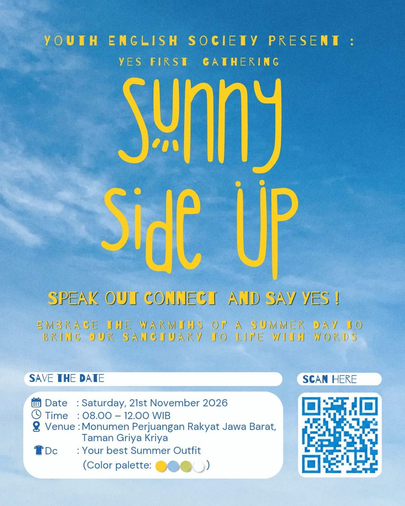
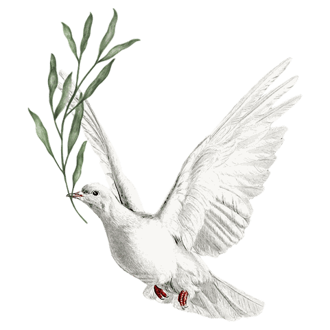
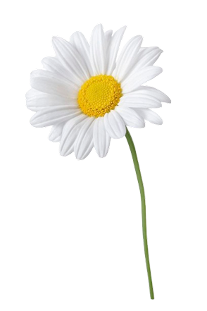
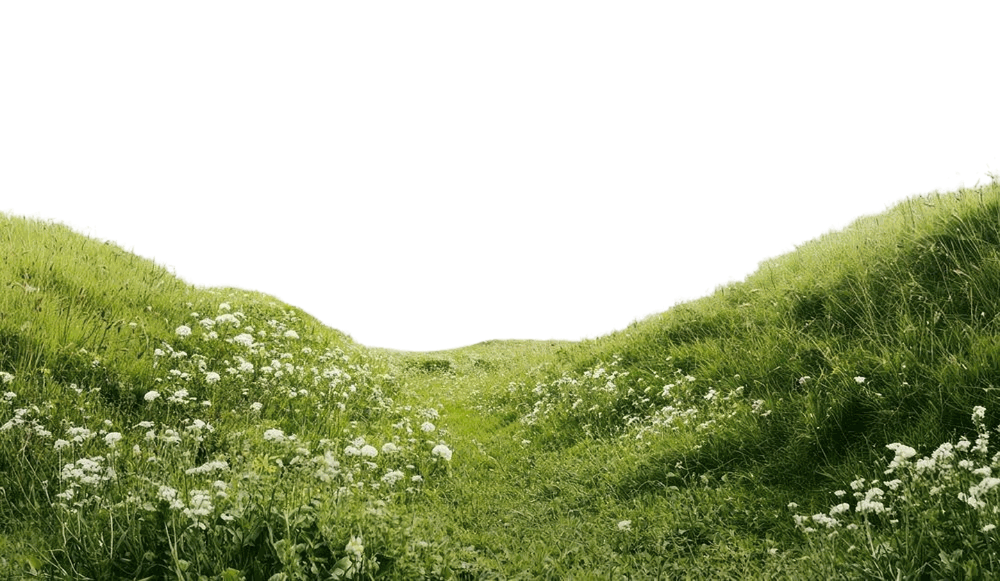

English Skills
Latihan kosakata dan percakapan melalui diskusi dan kelas rutin.
Bahasa Inggris, di luar ruang kuliah.
Speak out, connect,
and say YES!
Unit Kegiatan Mahasiswa di Universitas Komputer Indonesia yang berfokus pada pengembangan kemampuan bahasa Inggris, komunikasi, dan kepemimpinan.

Lihat poster & detail acara Where It BeganSejarah YES →
Where It BeganSejarah YES →

Our Little WorldVisi & 3 Pilar →
What We DoKegiatan Rutin →
Informasi pendaftaran tersedia melalui Instagram atau email YES.
YES mewadahi mahasiswa yang ingin mengembangkan keterampilan berkomunikasi dalam bahasa Inggris dan memperoleh pengalaman berorganisasi.
YES mengusung visi Sanctuary, yaitu ruang aman bagi anggota untuk berlatih berbicara dan menyampaikan pendapat tanpa takut diejek atau didiskriminasi. Anggota juga diajak berpikir logis, kritis, dan sistematis saat mencari solusi.
Dalam berorganisasi, YES berpedoman pada Pancasila, kekeluargaan, serta nilai PIQIE UNIKOM: Professionalism, Integrity, Quality, Information Technology, and Excellence.
Latihan kosakata dan percakapan melalui diskusi dan kelas rutin.
Latihan menyampaikan pendapat dan berbicara di depan umum.
Pengalaman berorganisasi dan mengelola kegiatan bersama.
Dari diskusi mingguan hingga pertemuan bulanan di luar kampus.
Diskusi kelompok tentang berbagai topik dalam bahasa Inggris, melatih critical thinking, keberanian berargumen, dan penggunaan kosakata baru.
Latihan menyusun pidato, storytelling, dan berbicara spontan di depan audiens.
Latihan menyusun argumen logis berdasarkan data dan menanggapi argumen lawan secara sistematis.
Pembahasan materi, format soal, dan strategi efektif mengerjakan tes TOEFL.
Jalan-jalan, hangout, dan bonding di luar kampus setiap bulan untuk mempererat rasa kekeluargaan.
Wadah terbuka untuk berbagi pengalaman, berkeluh kesah, dan saling mendukung antar anggota YES.
Konfirmasi jadwal dan lokasi kegiatan melalui @yesunikom.
Sedang disiapkan
Foto kegiatan YES belum tersedia di situs ini. Informasi kegiatan dapat diikuti melalui Instagram YES.
Tidak. Anda dapat berlatih bersama anggota lain melalui diskusi Kamis dan kelas public speaking hari Jumat.
YES mewadahi mahasiswa UNIKOM. Ketentuan keanggotaan dapat dikonfirmasi kepada pengurus YES.
Untuk bergabung, cukup hubungi pengurus YES melalui Instagram atau email.